Fuzion is the merger or amalgmation of two most popular HTML, CSS, and JS framework- Bootstrap and Materialize for developing responsive, mobile first projects on the web.
Currently v1.0.0
Fuzion is the merger or amalgmation of two most popular HTML, CSS, and JS framework- Bootstrap and Materialize for developing responsive, mobile first projects on the web.
Currently v1.0.0
Fuzion makes front-end web development faster and easier. It's made for folks of all skill levels, devices of all shapes, and projects of all sizes.

Fuzion combines the features of two powerful and popular frameworks, Bootstrap and Materialize. Get started now with more features.

Fuzion easily and efficiently scales your websites and applications with a single code base, from phones to tablets to desktops with CSS media queries.

With Fuzion, you get extensive and beautiful documentation for common HTML elements, dozens of custom HTML and CSS components, and awesome jQuery plugins.
Fuzion is open source. It's hosted, developed, and maintained on GitHub.
View the GitHub projectYou should use Fuzion if you want the features of Bootstrap as well as MaterializeCSS. Fuzion styles standard HTML elements and includes two grids and more.
Love Fuzion and want to Tweet it, share it, or star it? Well, I appreciate that <3
3rd year Bachelor of Technology student in BML Munjal University, Gurgaon, Haryana, India.